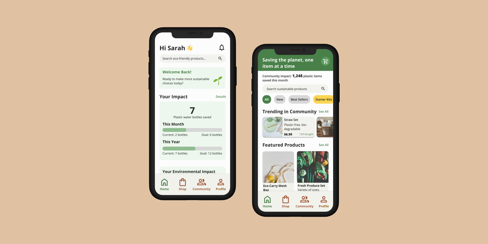

PROBLEM (the challenge?)
Sustainable Living, Complicated Shopping.
The United States is on track to run out of landfill space by 2040*, yet eco-conscious consumers struggle to find truly zero-waste, ethically sourced products. Despite their willingness to make sustainable choices, they face greenwashing, limited availability, and overwhelming research burdens. There is a critical need for an accessible, trustworthy platform that simplifies sustainable shopping and empowers individuals to reduce their waste footprint - before time runs out.
How can we help eco-conscious consumers make truly sustainable purchasing decisions without the overwhelming research burden?
RESEARCH & ANALYSIS
Passionate Environmentalist, Seeking Solutions.

My research led me to key insights that guided my design direction:
- #1: Consumers want to make sustainable choices but struggle with greenwashing and lack of clear information about product credentials.
- #2: The research burden is too high - users spend excessive time trying to verify sustainability claims across multiple sources.
- #3: Community connection is valuable - users want to share experiences and learn from others on similar sustainability journeys.
COMPETITIVE ANALYSIS
Lacking Clarity, Information, and Community.
To better understand the zero-waste and sustainable e-commerce landscape, I conducted a competitive audit of five platforms—three direct and two indirect competitors. My goal was to identify strengths, weaknesses, gaps, and opportunities to inform the design of a truly user-centered, zero-waste shopping experience.

Here's what I discovered:
-
Sustainability messaging needs to be immediate and clear
Many competitors bury their "why zero waste" messaging or focus more on products than purpose. Users want to trust that products are truly sustainable, but don't want to dig for proof. -
Filtering by values builds trust and personal relevance
Platforms like EarthHero allow filtering by "vegan", "plastic-free", and "refillable", which helps users align purchases with their values and builds confidence in their choices. -
Education paired with products empowers users
Competitors with educational content create more user confidence, especially for beginners. However, content is usually siloed and not connected directly to products. -
Visual simplicity signals trust, but depth is often lacking
Most sites use minimalist, earthy design to communicate eco-friendliness, but some lack visual interest or fail to convey emotional connection with the mission. -
Mobile UX is critical and often under-optimized
Several competitors have decent mobile sites but suffer from cramped layouts, truncation, or unclear user flows that hinder the shopping experience.
From this analysis, I concluded that the gap isn't in product availability, but in how sustainability information is communicated and integrated into the shopping experience. Users need immediate clarity, educational support, and mobile-optimized flows to make confident sustainable choices.
SOLUTION
Ethical Shopping, Clearly Defined.
Our solution was UnBoxed, a mobile application designed to simplify sustainable shopping through personalization and community. As the lead Product Designer, I focused on creating an intuitive user experience that prioritized transparency and trust. The app features:
Transparent Product Information
- Clear details on certifications, materials, and ethical sourcing.
Community Forum
- A space for users to share reviews, tips, and connect with like-minded individuals.
Streamlined Checkout
- An efficient process that minimizes friction.

POTENTIAL IMPACT
Streamlining the Path to Sustainable Living.
- Empowered Consumers: The app aims to empower consumers to make informed and sustainable choices by providing them with the tools and information they need.
- Increased Adoption of Sustainable Products: By simplifying the shopping experience and building trust, the app has the potential to increase the adoption of sustainable products.
- Fostering a Community: The community forum will create a sense of belonging and encourage users to support each other on their sustainability journeys.
- Reduced Environmental Impact: By promoting sustainable consumption and supporting eco-conscious businesses, the app can contribute to a more sustainable future.
LEARNINGS
Designing for Sustainability.
This conceptual project has allowed me to explore the challenges and opportunities in designing for sustainable living. I learned the importance of user-centered design and the value of creating intuitive and accessible interfaces. In the future, I would like to further explore the potential of gamification and personalized recommendations to enhance user engagement and drive behavior change.